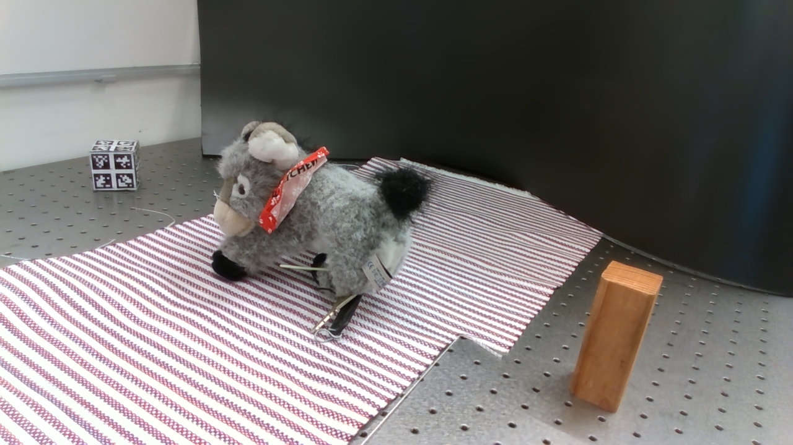
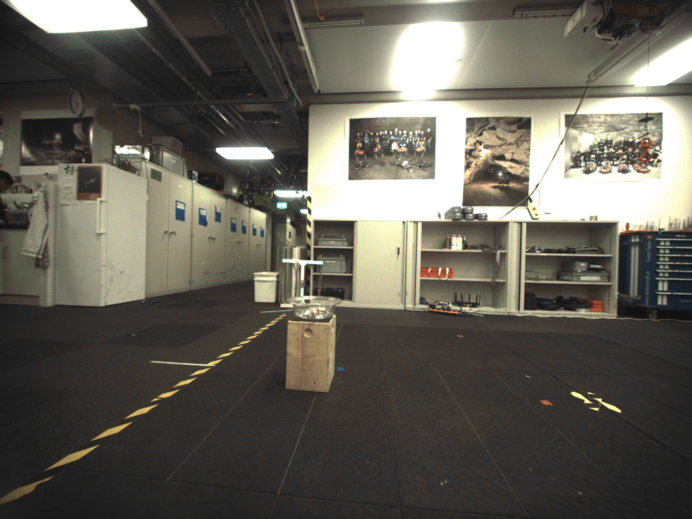
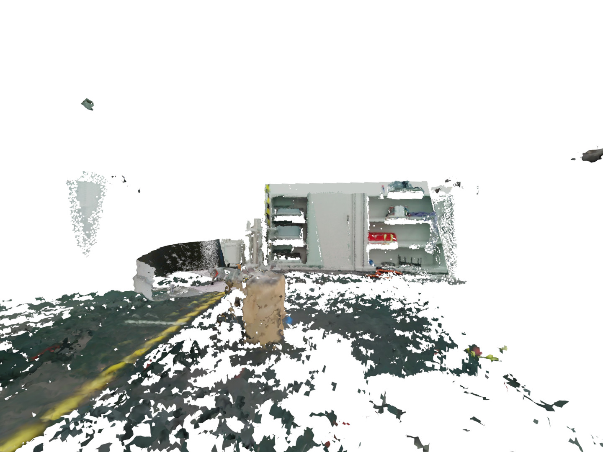
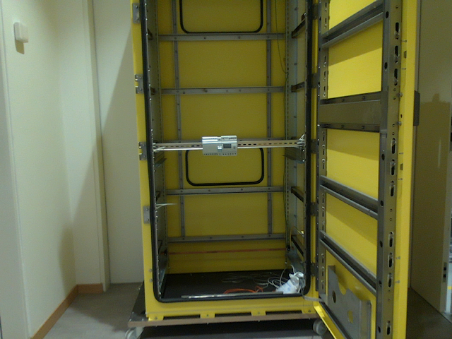
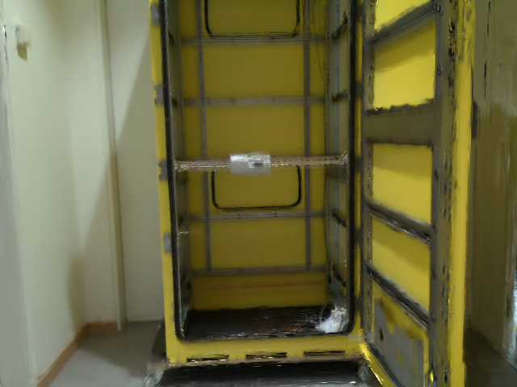

Robots
We tested our pipeline with three robots: Panda, Anymal, and Alma. Each robot has different configurations and sensors, which allowed us to test the pipeline with a variety of data sources.
Radiance field methods such as Neural Radiance Fields (NeRFs) or 3D Gaussian Splatting (3DGS), have revolutionized graphics and novel view synthesis. Their ability to synthesize new viewpoints with photo-realistic quality, as well as capture complex volumetric and specular scenes, makes them an ideal visualization for robotic teleoperation setups. Direct camera teleoperation provides high-fidelity operation at the cost of maneuverability, while reconstruction-based approaches offer controllable scenes with lower fidelity. With this in mind, we propose replacing the traditional reconstruction-visualization components of the robotic teleoperation pipeline with online Radiance Fields, offering highly maneuverable scenes with photorealistic quality.
We present three main contributions to the state-of-the-art:
Furthermore, to enable seamless integration with existing setups, these components were tested with multiple robots in multiple configurations and were displayed using traditional tools as well as the VR headset. The results across methods and robots were compared quantitatively to a baseline of mesh reconstruction, and a user study was conducted to compare the different visualization methods.

We tested our pipeline with three robots: Panda, Anymal, and Alma. Each robot has different configurations and sensors, which allowed us to test the pipeline with a variety of data sources.
The Franka Panda arm is mounted to a table providing very accurate poses, but limited mobility when capturing a table top scene.

The Anymal quadruped is a mobile base which was able to capture a room with a wooden pedistal in the middle, but had noisy poses during locomotion.
The ALMA system has utilizes and arm on a mobile base, providing a good balance of mobility and accuracy to capture a cabinet.
We compared the reconstructions of the Radiance Fields with a baseline of mesh reconstruction. The Radiance Fields were generated using NeRF and 3D Gaussian Splatting. Three different datasets compare reconstruction of a table top scene, a room captured by the mobile Anymal, and a cabinet captured using the arm on a mobile manipulator.
| Ground Truth | Voxblox | NeRF | 3D Gaussian Splat |
|---|---|---|---|
 |
 |
 |
 |
|  |  |  |
 |
|  |  |
 |
 |
The Radiance Fields can be visualized in a variety of ways, from traditional RViz to a VR scene.
For integration with existing ROS teleoperation systems, an RViz plugin can display Radiance Fields along side robot data.
For more immersive interaction, a VR visualization suite can be used to view the Radiance Fields and robots in 3D. The VR scene also displays
{}